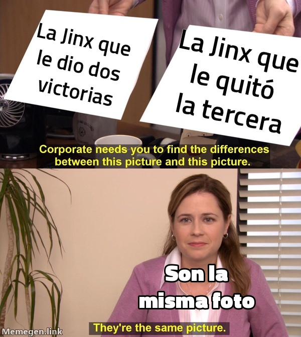

Le mató su propia medicina
El paciente responde de maravilla a la Jinx, cambia de tratamiento a las diez y media y una Jinx rival le receta la derrota.

Parte médico de Fr4nux, el Tirador en Remisión, a primera hora del miércoles. El paciente ingresó en la SoloQ pasadas las nueve y media de la noche y respondió de forma notable a la Jinx: dos tomas, dos victorias y, en la primera, el 33,5 % del daño de su equipo. En esta planta no se veía una cifra así sin que alguien pidiera una segunda opinión.
Efectos secundarios: ceguera. En la segunda toma colocó tres guardianes en veintisiete minutos y acabó con una puntuación de visión de cuatro. El Instituto Hextech lo considera compatible con un tirador que no necesita ver el mapa porque no piensa separarse de la espalda de su soporte.
A las diez y media, contra toda indicación facultativa, el paciente se cambió a la Kalista. Al otro lado de la calle le esperaba, precisamente, una Jinx. Ella terminó con once asesinatos; él, con cinco y dos mil quinientas monedas por detrás. Cobró casi la cuarta parte del oro de su equipo para devolver el 10 % del daño. Se llevó el Barón. Perdió la partida.
Diagnóstico: el tirador no está curado, está medicado. Se recomienda Jinx en vena y una orden de alejamiento de la Kalista.
En esta casa ya sabemos lo bien que funcionan.